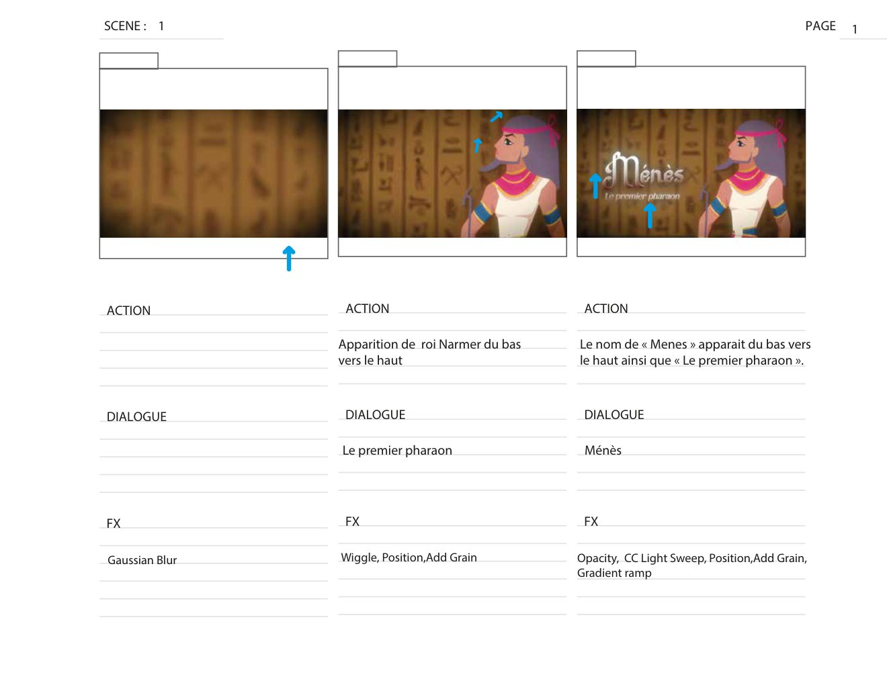
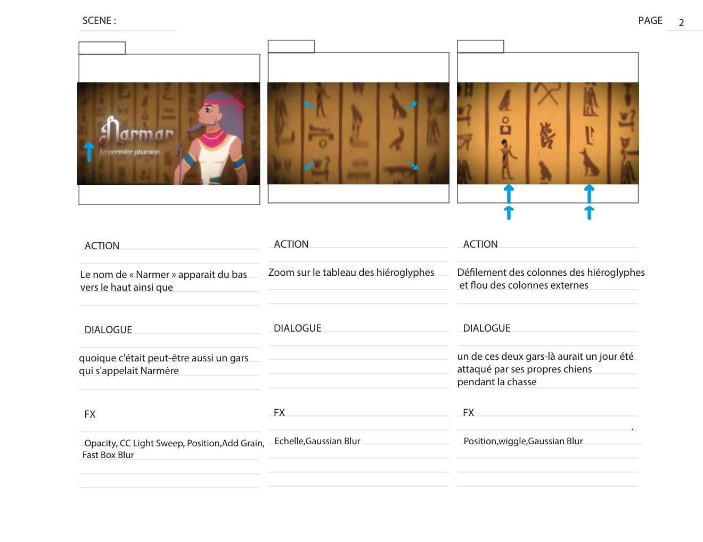
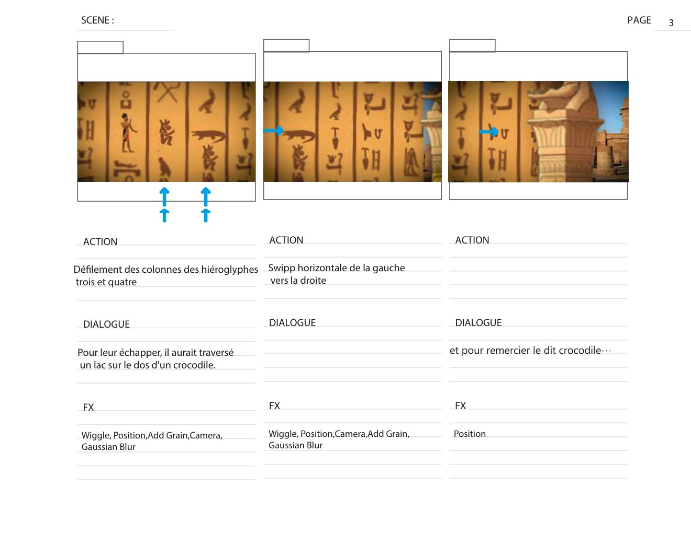
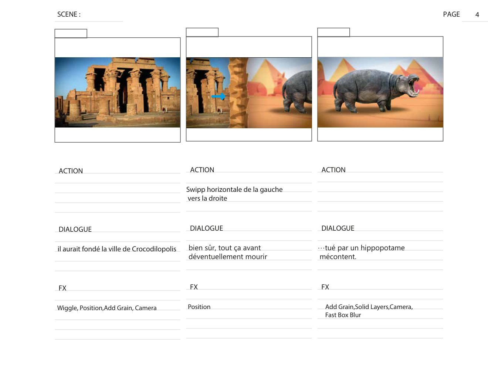

Narmer & Ménès
- Catégorie
- Motion design
- Type
- Projet scolaire
- Équipe
- Projet solo
- Rôle
- Illustration, animation et son
Le scénarimage
Avant d'animer, j'ai découpé le récit en quatre pages de scénarimage. Pour chaque plan, j'ai noté l'action, le texte du balado et les effets à utiliser dans After Effects. Cliquez sur une page pour l'agrandir, puis passez d'une page à l'autre avec les flèches.



